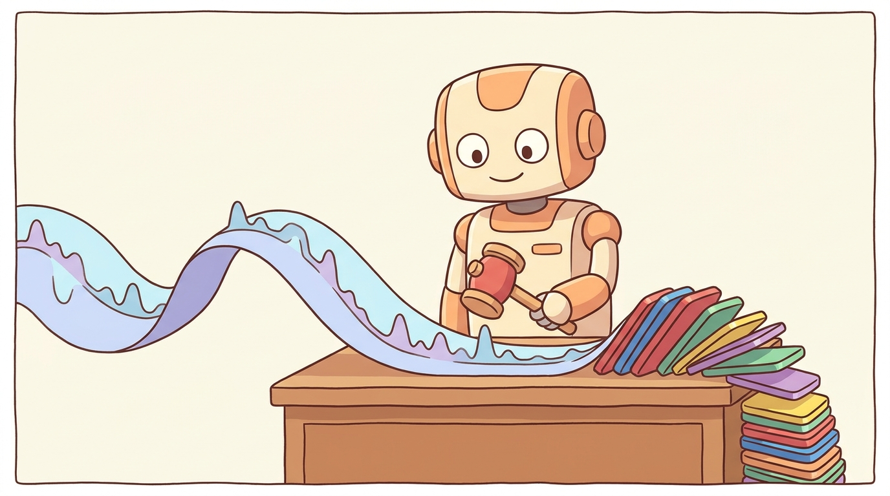

"To turn audio into a sequence of tokens an LLM can predict, first agree that not all 65,000 amplitude values matter; then teach a small codebook which ones do."
Echo, Pitch-Perfect AI Agent
Bark, AudioLM, VALL-E, MusicGen, Moshi, and every other "audio LLM" in this book operates on a discrete token stream. That stream comes from a neural audio codec: an encoder-decoder that compresses 24 kHz audio into a small number of discrete tokens per second, decoded back to a near-perfect waveform. The encoder side of the codec is the audio analogue of a BPE tokenizer; the decoder side is the audio analogue of a tokenizer's de-tokenization step. This section builds the codec recipe layer by layer: plain vector quantization, product quantization, residual vector quantization, the differentiability tricks that let codebooks train by gradient descent, and finally the full SoundStream/EnCodec/DAC/Mimi system. By the end of the section, the reader will see Bark's "8 codebooks at 75 Hz" claim as a concrete tensor shape, not an incantation.
Prerequisites
This section assumes the reader has finished Section 20.0.1 on audio data and representations (waveforms, STFT, log-mel) and is comfortable with the autoregressive language-model setup from Chapter 3. Familiarity with vector embeddings and softmax helps but is not required.

20.0.2.1 Vector Quantization Basics
Vector quantization (VQ) replaces a real-valued vector with the index of the nearest entry in a finite codebook. Concretely, fix a codebook $\mathcal{C} = \{c_1, c_2, \ldots, c_K\} \subset \mathbb{R}^d$. For an input vector $x \in \mathbb{R}^d$, the encoder emits the index
and the decoder recovers the approximation $\hat{x} = c_{k^*(x)}$. A codebook of size $K$ produces an index that needs $\log_2 K$ bits to store. The worked example from the original VQ literature uses a 20 ms window of 4 kHz audio (80 samples, treated as an 80-dimensional vector), a codebook of size $K = 1024$, and emits one 10-bit index every 20 ms, a 64x reduction over the original 16-bit-per-sample stream.
Geometrically, the codebook partitions $\mathbb{R}^d$ into Voronoi cells: each region of space gets snapped to a single codebook entry. Classical VQ (the Linde-Buzo-Gray algorithm, 1980) trains the codebook with k-means style updates on a fixed dataset. Neural VQ trains the codebook jointly with an encoder network, and that joint training is what makes the codebook adapt to the structure the rest of the model needs.
An autoregressive language model predicts the next token from a finite vocabulary by emitting a probability distribution over that vocabulary; the model is trained with cross-entropy loss. This works exactly as well for audio tokens as for text tokens. A non-quantized continuous representation would force the model to either predict a real-valued vector (with no good loss for high-dimensional outputs) or predict a Gaussian density (mixture density networks; mode collapse-prone and slow to train). Discrete codebook indices sidestep both problems and let the entire LLM tool chain (FlashAttention, KV cache, beam search, top-p sampling) apply unchanged. This is the single most important reason audio codecs matter.
Figure 20.0.2.0 collapses to a few dozen lines of PyTorch. The snippet below builds a minimal VQ-VAE that encodes a batch of vectors, quantizes through a $K$-entry codebook with the straight-through estimator, decodes back, and exposes both the reconstruction loss and the commitment loss in one forward pass:
import torch
import torch.nn as nn
import torch.nn.functional as F
class VQVAE(nn.Module):
def __init__(self, in_dim=64, latent_dim=16, K=256, beta=0.25):
super().__init__()
self.encoder = nn.Sequential(nn.Linear(in_dim, 64), nn.ReLU(),
nn.Linear(64, latent_dim))
self.decoder = nn.Sequential(nn.Linear(latent_dim, 64), nn.ReLU(),
nn.Linear(64, in_dim))
self.codebook = nn.Embedding(K, latent_dim) # K x d
self.codebook.weight.data.uniform_(-1.0 / K, 1.0 / K)
self.beta = beta
def quantize(self, z): # z: (B, d)
dist = torch.cdist(z, self.codebook.weight) # (B, K)
k_star = torch.argmin(dist, dim=-1) # (B,)
e = self.codebook(k_star) # (B, d)
commit = F.mse_loss(z, e.detach()) + self.beta * F.mse_loss(e, z.detach())
e_st = z + (e - z).detach() # straight-through
return e_st, k_star, commit
def forward(self, x):
z = self.encoder(x)
e, k_star, commit = self.quantize(z)
x_hat = self.decoder(e)
recon = F.mse_loss(x_hat, x)
return x_hat, k_star, recon + commit
quantize method performs the $\arg\min$ codebook lookup (the discrete step), assembles the commitment loss from Section 20.0.2.4, and applies the straight-through trick (z + (e - z).detach()) so the encoder receives the decoder's gradient unchanged. Swap the nn.Linear stacks for 1D convolutions to get the SoundStream / EnCodec encoder; swap them for 2D convolutions to get the image VQ-VAE that powers DALL-E and VQGAN.Instantiating the module above with VQVAE(in_dim=64, latent_dim=16, K=256) and pushing a single random vector $x \in \mathbb{R}^{64}$ through it gives the following shapes and bit budget. The encoder compresses $x$ from 64 floats (2048 bits at fp32) to a 16-float latent $z$. The codebook contains $K = 256$ entries of dimension $16$, so the $\arg\min$ search computes 256 squared distances and returns a single integer $k^* \in \{0, \ldots, 255\}$.
That integer is the entire transmitted payload: $\log_2 256 = 8$ bits replace the original 2048-bit vector, a $256\times$ compression. The decoder maps the chosen codebook entry $c_{k^*} \in \mathbb{R}^{16}$ back to $\hat{x} \in \mathbb{R}^{64}$, and the reconstruction error $\lVert x - \hat{x} \rVert_2^2$ shrinks as training pulls $c_{k^*}$ toward the encoder outputs that selected it. For a batch of 32 vectors, the codebook usage histogram is the diagnostic that exposes codebook collapse early: a healthy run sees roughly 80 to 150 of the 256 entries used on each batch, while a collapsing run sees the same handful of entries selected for everything.
20.0.2.2 Product Quantization
The straightforward way to grow the effective vocabulary of VQ is to enlarge $K$, but the memory cost grows as $K \cdot d$ and the nearest-neighbor search cost grows as $O(K)$ per input. Product quantization (PQ) achieves the same effective vocabulary at a fraction of the cost by splitting the input vector into $G$ disjoint chunks and quantizing each chunk independently with its own codebook of $K$ entries.
If the input is $x \in \mathbb{R}^d$ and the split is into $G$ chunks of size $d/G$, then each chunk gets quantized to one of $K$ entries, and the joint code is a $G$-tuple of indices. The effective vocabulary is
while the storage cost is only $G \cdot K \cdot (d/G) = K \cdot d$ floats (the same as a single $K$-entry flat codebook) and the search cost is $O(G \cdot K)$ rather than $O(K^G)$. With $G = 2$ and $K = 1024$, PQ encodes the same information as a $1024^2 \approx 10^6$-entry flat codebook using just $2 \cdot 1024 = 2048$ codebook vectors. The wav2vec 2.0 quantizer uses $G = 2$ groups with $K$ in the low thousands to expose 4 to 8 million effective codewords from a trainable parameter budget of a few thousand vectors.
20.0.2.3 Residual Vector Quantization
Product quantization assumes the dimensions of $x$ split into independent chunks. Real audio latents are not separable that way, so PQ alone is not enough for high-fidelity codecs. Residual vector quantization (RVQ) instead applies multiple VQ stages sequentially, each modeling what the previous stages could not capture. The chain is:
and after $K$ stages the reconstruction is $\hat{x} = \sum_{k=1}^{K} e_k$. Each stage $k$ has its own codebook $\mathcal{C}_k$, and crucially each codebook learns a different scale of detail: codebook 1 captures the coarse spectral envelope of the latent (vowel quality, pitch register), codebook 2 captures the next layer of prosodic and fricative detail, and later codebooks fill in fine high-frequency texture.
The RVQ recipe is what powers EnCodec, SoundStream, DAC, and Mimi. The figure below sketches the residual chain at a glance, with annotations on what each codebook captures; the pseudocode for the encoder is small enough to fit in a callout:
Steps
import torch
def rvq_encode(z, codebooks):
"""
z: (B, D) latent vector per time step
codebooks: list of (K, D) tensors, one per RVQ stage
Returns:
indices: (B, K_stages) integer codebook IDs
z_hat: (B, D) reconstructed latent (sum of chosen entries)
"""
residual = z
indices, chosen = [], []
for cb in codebooks:
# Squared distance from each residual to every codebook entry: (B, K)
dist = torch.cdist(residual, cb)
idx = torch.argmin(dist, dim=-1) # (B,)
e_k = cb[idx] # (B, D)
residual = residual - e_k # next stage's input
indices.append(idx)
chosen.append(e_k)
z_hat = torch.stack(chosen, dim=0).sum(dim=0)
return torch.stack(indices, dim=-1), z_hatThe behaviour that distinguishes RVQ from a single fat codebook is that the codebooks learn a hierarchy. Codebook 1 alone gives a low-fidelity reconstruction of $x$; adding codebook 2 sharpens it; adding codebooks 3 through $K$ progressively recovers more detail. This is what enables scalable bitrate: a streaming application can drop codebooks 7 and 8 to halve bandwidth while keeping intelligibility, then re-enable them when bandwidth recovers. Dropping codebook 1 instead destroys intelligibility entirely.
20.0.2.4 Differentiable Quantization
The argmin in VQ and RVQ is not differentiable, which means a naive setup cannot train the codebooks from a downstream reconstruction or perceptual loss. Two separate solutions exist, and each codec lineage commits to one of them.
The Straight-Through Estimator
The straight-through estimator (STE) is the simpler fix and the one EnCodec, SoundStream, and DAC use. On the forward pass, the network performs the discrete lookup as usual: $\hat{x} = e_{k^*}$. On the backward pass, the gradient is copied through unchanged: $\partial \hat{x} / \partial x \equiv I$, pretending the quantizer were the identity. The codebook entries are updated separately through a commitment loss
where $\mathrm{sg}(\cdot)$ is the stop-gradient operator. The first term pulls the encoder output $x$ toward its assigned codebook entry; the second term (the codebook loss) pulls the codebook entry toward the encoder output. In practice many codec implementations replace the codebook-loss term with an exponential moving average update on the codebook entries: each entry tracks the running mean of the encoder vectors that selected it, with decay around $0.99$. The EMA variant trains more stably and is what EnCodec and SoundStream actually ship.
The Gumbel-Softmax Trick
The Gumbel-Softmax alternative reformulates the discrete choice as a categorical distribution and uses a continuous relaxation that is differentiable. The path has three stages, all standard in the variational inference literature.
Stage 1 (reformulate as multiplication). The lookup $\hat{x} = e_{k^*}$ is equivalent to $\hat{x} = E^\top \mathbf{1}_{k^*}$ where $E \in \mathbb{R}^{K \times d}$ stacks the codebook entries and $\mathbf{1}_{k^*} \in \{0, 1\}^K$ is a one-hot vector. The encoder produces logits $\ell \in \mathbb{R}^K$ and one-hot is replaced by $\arg\max$ over $\ell$, which is still non-differentiable but now expressed as a vector operation.
Stage 2 (relax to softmax). Replace the $\arg\max$ with $\mathrm{softmax}(\ell / \tau)$ at temperature $\tau$. As $\tau \to 0$ the softmax sharpens to a one-hot vector; in the limit it equals the argmax. The reconstruction is now a soft mixture $\hat{x} = E^\top \mathrm{softmax}(\ell / \tau)$, which is fully differentiable. The catch is that at low temperature the softmax is also sample-free: the model picks the same codeword every time given the same logits, which gives no exploration of the discrete vocabulary.
Stage 3 (Gumbel noise restores sampling). The Gumbel-Max trick says that if $g_k$ are i.i.d. samples from the Gumbel distribution (computed as $g_k = -\log(-\log u_k)$ for $u_k \sim \mathrm{Uniform}(0, 1)$), then $\arg\max_k (\ell_k + g_k)$ is a sample from the categorical distribution $\mathrm{softmax}(\ell)$. Replacing the $\arg\max$ with a low-temperature softmax gives the Gumbel-Softmax:
which produces near-one-hot samples whose stochasticity comes from the Gumbel noise (not in the gradient path) and whose categorical logits $\ell$ are learnable. The temperature $\tau$ is typically annealed from 2.0 down to 0.5 over training to start with smooth gradients and end with sharp samples. This is the recipe wav2vec 2.0 uses for its quantization module.
EnCodec and SoundStream use STE+EMA because their training objective is reconstruction-driven: the codebook is being shaped to minimize an L2 reconstruction loss, and the EMA update gives a stable, k-means-like assignment. Wav2vec 2.0 uses Gumbel-Softmax because its training objective is contrastive: the model needs to sample from the codebook distribution to construct distractor sets for the InfoNCE loss in Section 20.0.4. Both tricks work; the choice tracks what the rest of the model expects out of the quantizer.
The single biggest training failure mode for any VQ-based codec is codebook collapse: a subset of codebook entries stops being selected for any input, and because the commitment loss only updates entries that were chosen, the unused entries never receive gradient and never recover. EnCodec and SoundStream mitigate this with two tricks. First, random restarts: any codebook entry that goes unused for more than ~200 batches is reset to a randomly chosen encoder output from the current batch. Second, code utilization regularization: a small loss term encourages the per-entry usage distribution to stay roughly uniform. Reader who trains a codec from scratch and sees the effective vocabulary collapse from 1024 down to 12 entries is hitting this exact failure; both fixes are essential.
20.0.2.5 The Neural Audio Codec Lineage
Four codecs cover the field as of 2026. They share an encoder-decoder architecture, an RVQ quantizer in the middle, and multi-loss training; they differ on bitrate, frame rate, and which downstream LLM they feed.
| Codec | Year | Input rate | Frame rate | Codebooks | Codes/codebook | Lab |
|---|---|---|---|---|---|---|
| SoundStream | 2021 | 24 kHz | 75 Hz | 8 to 32 (variable) | 1024 | |
| EnCodec | 2022 | 24 / 48 kHz | 75 Hz | 8 (max) | 1024 | Meta |
| DAC | 2023 | 16 / 24 / 44 kHz | 50 Hz | 9 | 1024 | Descript |
| Mimi | 2024 | 24 kHz | 12.5 Hz | 8 (codebook 1 = distilled semantic) | 2048 | Kyutai (Moshi) |
SoundStream (2021)
Zeghidour et al.'s SoundStream was the first paper to put a learnable RVQ inside a fully neural codec and demonstrate that the result could compress 24 kHz speech to 3 kbps (or music to 12 kbps) at quality competitive with Opus and EVS at much higher bitrates. The encoder is a stack of strided 1D convolutions; the decoder mirrors it with transposed convolutions; the RVQ uses up to 24 codebooks each of size 1024. The key contribution beyond RVQ-in-a-codec is variable bitrate at inference: a single trained model can serve any bitrate between roughly 1.5 and 18 kbps by simply enabling or disabling later codebooks at decode time.
EnCodec (2022)
Defossez et al.'s EnCodec is the Meta refinement of SoundStream that ships on HuggingFace under facebook/encodec_24khz and facebook/encodec_48khz. The architecture is the same convolutional encoder-decoder + RVQ recipe, with two main improvements. First, the loss design is more carefully tuned: EnCodec combines a time-domain L1 loss $\mathcal{L}_w = \lVert x - \hat{x} \rVert_1$, a multi-scale spectral loss $\mathcal{L}_t = \sum_i \lVert \mathrm{STFT}_{w_i}(x) - \mathrm{STFT}_{w_i}(\hat{x}) \rVert_1$ summed over five FFT sizes from 64 to 2048, an adversarial loss $\mathcal{L}_g$ from a multi-period and multi-scale discriminator, a feature-matching loss $\mathcal{L}_{\mathrm{feat}}$ across discriminator layers, and the standard RVQ commitment loss. The full training objective is the weighted sum
where the published hyperparameters at 24 kHz are $\lambda_w = 0.1$, $\lambda_t = 1.0$, $\lambda_g = 3.0$, $\lambda_{\mathrm{feat}} = 3.0$, and $\lambda_q = 1.0$, with $\lambda_g$ and $\lambda_{\mathrm{feat}}$ adaptively balanced during training. Second, EnCodec uses an LSTM bottleneck between the convolutional encoder and the RVQ, which gives the model a tiny amount of recurrent context and noticeably improves reconstruction.
# Encode a waveform to EnCodec discrete tokens and decode back. The token
# tensor is what downstream audio language models (MusicGen, AudioLM, VALL-E)
# actually consume.
import torch
from transformers import EncodecModel, AutoProcessor
processor = AutoProcessor.from_pretrained("facebook/encodec_24khz")
model = EncodecModel.from_pretrained("facebook/encodec_24khz").eval()
# 1-second sine sweep at 24 kHz (use any waveform; sample rate must match).
sr = 24_000
t = torch.linspace(0, 1, sr)
audio = (0.5 * torch.sin(2 * 3.1416 * 440 * t)).unsqueeze(0) # (channels, T)
inputs = processor(raw_audio=audio.numpy(), sampling_rate=sr,
return_tensors="pt")
with torch.no_grad():
enc = model.encode(inputs["input_values"], inputs["padding_mask"],
bandwidth=6.0) # 6 kbps = 8 codebooks
codes = enc.audio_codes # (1, 1, K=8, T_latent)
rec = model.decode(codes, enc.audio_scales,
inputs["padding_mask"])[0] # waveform back
frame_rate = codes.shape[-1] / 1.0 # tokens per second
print("codebook stack shape:", codes.shape) # (B, 1, 8, ~75)
print("frame rate (tokens/s):", frame_rate) # ~75 Hz
print("reconstruction shape:", rec.shape) # (1, 1, 24000)
Code Fragment 20.0.2.2: Round-tripping audio through EnCodec on the HuggingFace hub. The codes tensor (8 codebooks × ~75 frames per second) is the discrete token sequence consumed by music and speech LMs; model.decode reverses the process to produce a listenable waveform.
At 24 kHz with a 320× encoder downsample, EnCodec emits 24000 / 320 = 75 latent frames per second. With K = 8 codebooks of 1024 entries each (10 bits per codebook), the per-second bit budget is 75 × 8 × 10 = 6000 bits, exactly the advertised 6 kbps. Drop the bandwidth flag to 1.5 kbps and the processor activates only 2 codebooks: 75 × 2 × 10 = 1500 bits. The same model can stream at four operating points (1.5, 3, 6, 12 kbps) without retraining because RVQ trains all K levels jointly and an inference-time mask keeps only the first $k$. This per-frame bit count is the number a downstream LM has to predict per second, so it directly bounds how quickly an audio language model can generate speech in real time.
DAC: Descript Audio Codec (2023)
Kumar et al.'s DAC pushed the quality-bitrate frontier further with three changes: factorized codes (an explicit low-rank projection between encoder output and each codebook, which reduces parameter count), an improved multi-band discriminator, and aggressive use of periodic activation functions (Snake activation) that better model the periodic structure of speech and music. DAC at 8 kbps reaches transparent quality on music (the listener cannot distinguish reconstruction from original in blind tests), making it the default codec for high-quality applications like commercial music remastering.
Mimi (2024)
Defossez et al.'s Mimi is the codec underneath Kyutai's Moshi full-duplex speech LM. Two design choices distinguish it. First, the frame rate is 12.5 Hz instead of 75 Hz, so a 30-second clip becomes 375 tokens per codebook instead of 2250, making interactive speech-to-speech LLM context budgets manageable. Second, codebook 1 is trained with a distillation loss against a frozen WavLM encoder: the first RVQ stage is constrained to recover the semantic content of the audio, not just its acoustic detail. The remaining seven codebooks then carry only the prosodic and timbral information that distillation does not. Moshi exploits this split by routing codebook 1 to its main language model (for reasoning about what was said) and codebooks 2 to 8 to its acoustic head (for synthesizing the reply). Section 20.1's "RVQ Under the Hood" callout covers the Mimi details in the TTS context.
20.0.2.6 EnCodec Inference: The Numbers That Anchor Mental Models
The HuggingFace EnCodec implementation lets the reader exercise the full encode-quantize-decode pipeline in roughly fifteen lines and see the tensor shapes that the rest of the chapter depends on.
from datasets import load_dataset, Audio
from transformers import EncodecModel, AutoProcessor
import torch
# Load the 24 kHz EnCodec checkpoint.
model = EncodecModel.from_pretrained("facebook/encodec_24khz")
processor = AutoProcessor.from_pretrained("facebook/encodec_24khz")
# Get a one-second speech clip at 24 kHz.
ds = load_dataset("hf-internal-testing/librispeech_asr_dummy", "clean", split="validation")
ds = ds.cast_column("audio", Audio(sampling_rate=24_000))
audio = ds[0]["audio"]["array"][: 24_000] # 1 second
inputs = processor(raw_audio=audio, sampling_rate=24_000, return_tensors="pt")
with torch.no_grad():
# Encode at the highest bandwidth (24 kbps -> all 8 codebooks).
encoder_outputs = model.encode(inputs["input_values"], inputs["padding_mask"], bandwidth=24.0)
# audio_codes shape: (n_chunks, batch, n_codebooks, n_frames)
codes = encoder_outputs.audio_codes
print(codes.shape)
# torch.Size([1, 1, 8, 75])
# - 1 codebook chunk (no chunking for <1s)
# - batch size 1
# - 8 RVQ codebooks
# - 75 time frames per second of audio @ 24 kHz
# Decode back to waveform.
audio_values = model.decode(codes, encoder_outputs.audio_scales, inputs["padding_mask"])[0]
print(audio_values.shape) # torch.Size([1, 1, 24000]); back to 1s @ 24 kHzTake a one-hour podcast episode at 24 kHz, encoded by facebook/encodec_24khz at the full 24 kbps setting (all 8 RVQ codebooks active). The frame budget is $3600 \times 75 = 270{,}000$ encoder frames; each frame stores 8 codebook indices and each index is $\log_2(1024) = 10$ bits, so the entire episode compresses to $270{,}000 \times 8 \times 10 = 21{,}600{,}000$ bits $\approx 2.7$ MB. The same hour at uncompressed 16-bit 24 kHz takes $3600 \times 24{,}000 \times 16 = 1.38 \times 10^9$ bits $\approx 173$ MB, a 64x reduction. Dropping to the lowest bandwidth setting (1.5 kbps, only the first codebook active) shrinks the file to $270{,}000 \times 10 = 2.7$ Mbits $\approx 340$ kB, suitable for ultra-low-bandwidth transmission with intelligible speech (PESQ around 2.7) but no music quality. The EnCodec decoder reverses this in roughly 0.1x real time on a single A10 GPU, so an hour of audio decodes in about six minutes. Reader streaming over a 16 kbps link can choose any bandwidth between 1.5 and 24 kbps at decode time, because RVQ codebook 1 alone reconstructs a coarse waveform and each additional codebook layers on more detail.
20.0.2.7 Three Applications: Compression, Audio LMs, and S2S
Once a codec exists, three downstream applications fall out almost for free.
(1) Low-bitrate audio compression. EnCodec at 6 kbps matches the perceptual quality of Opus at 12 to 16 kbps and is competitive with EVS at higher bitrates. This is the most direct application: take an audio file, encode to tokens, transmit the tokens over a narrow channel, decode at the receiver. Compared to handcrafted codecs (Opus, EVS, AMR), the learned codec adapts to the data distribution it was trained on (speech, music, or general audio), so deployment choice matters: the speech-tuned EnCodec checkpoint is poor on classical music and vice versa.
(2) Generative audio LMs. The codec tokens serve as the vocabulary for an LLM trained to predict the next audio token given context. AudioLM (Borsos et al., 2022) was the first instance, predicting SoundStream tokens conditioned on semantic tokens from a frozen w2v-BERT model. VALL-E (Wang et al., 2023) cast TTS as conditional next-token prediction over EnCodec tokens given a text transcript and a 3-second voice prompt. MusicGen (Copet et al., 2023) predicts EnCodec tokens for music conditioned on a text or melody prompt. Moshi (Defossez et al., 2024) predicts Mimi tokens at 12.5 Hz to enable full-duplex speech-to-speech conversation. Every one of these models is "a transformer LLM, but the vocabulary is audio codec tokens instead of text", and the same training and inference infrastructure (FlashAttention, KV cache, top-p sampling) transfers wholesale.
For autoregressive generation with $K$ RVQ codebooks, the model has a choice of token layout pattern that trades latency, fidelity, and modeling difficulty. The four patterns named in the literature are:
- Flatten: emit all $K$ tokens for time step $t$, then all $K$ tokens for $t+1$, and so on. Highest fidelity (the model sees full prior context per stage) but $K \times$ the sequence length, so context budget bottlenecks.
- Parallel: emit all $K$ tokens for time step $t$ in one forward pass, treating the $K$ codebooks as independent. Fastest but ignores within-step dependencies and quality suffers.
- VALL-E: emit the first codebook autoregressively across time, then a non-autoregressive head fills in codebooks 2 through $K$ in parallel conditioned on codebook 1. Good speed-quality trade for TTS; what VALL-E uses by name.
- Delay: stagger codebooks by one time step each, so codebook 1 at time $t$ is predicted alongside codebook 2 at time $t-1$ and codebook 3 at time $t-2$. The model can start emitting coarse tokens while still refining the fine tokens of the previous step. MusicGen ships this pattern.
Section 20.1 covers Bark's three-stage decomposition (semantic + coarse + fine) which is a specific instance of the layout idea; Section 20.3 covers MusicGen's delay pattern explicitly.
(3) Speech-to-speech translation. If both source and target language audio are tokenized with the same codec, an encoder-decoder transformer can translate French speech tokens into English speech tokens directly, with no intermediate text representation. Meta's SeamlessM4T (Communication et al., 2023) is the prominent example; its speech head predicts SoundStream-derived tokens conditioned on a multimodal encoder that ingests source-language speech (or text, or both). The translation can preserve speaker voice characteristics because the codec carries them in the tokens directly.
The codec-as-vocabulary recipe is woven through the rest of Chapter 20. Bark in Section 20.1 autoregresses EnCodec tokens with the three-stage Bark decomposition; VALL-E and Tortoise use the same idea. MusicGen in Section 20.3 uses EnCodec with the delay pattern. Mimi appears as the tokenizer underneath Moshi in the same section's full-duplex callout. Even the spectrogram-only models (Whisper for ASR in Section 20.5, F5-TTS for flow-matching speech synthesis in Section 20.1) make use of the same "compress audio to a tractable latent, then process with a transformer" mental model. Reader who fully internalizes this section should find the rest of the chapter mostly a matter of which codec, which transformer, and which loss.
I spent three weeks trying to compress my training data with EnCodec. Then someone reminded me EnCodec was trained on the kind of data I was about to compress. The codec preserved every artifact I had wanted to hide, perfectly, in eight beautifully quantized codebooks. Lesson learned: a learned codec is also a learned mirror, and if your data is full of crackles the codec will gladly hand them back to you at 6 kbps. An EnCodec Encoder Without a Plan
A neural audio codec is the audio analogue of a BPE tokenizer plus de-tokenizer. The encoder side compresses 24 kHz audio into a small number of discrete tokens per second (EnCodec: 75 frames/sec, 8 codebooks of 1024 entries each, 6 kbps total); the decoder side reconstructs near-perfect waveform from those tokens. The training recipe is a convolutional encoder-decoder with an RVQ in the middle, multi-loss training (time + spectral + adversarial + commitment), and either STE+EMA or Gumbel-Softmax for codebook differentiability. The codec lineage SoundStream → EnCodec → DAC → Mimi covers the field; codebook collapse is the dominant training failure mode and is mitigated by random restarts and EMA. The output tokens serve as the vocabulary for every audio LLM in this book.
Objective. Compress and decompress a real waveform with EnCodec; confirm the token shape, total bitrate, and perceptual quality.
Task. Install transformers and load EncodecModel.from_pretrained("facebook/encodec_24khz") with its processor. Load a 10-second 24 kHz mono clip. Encode with bandwidth 6.0 (8 codebooks). Confirm: tokens of shape (1, 8, num_frames) with num_frames = ceil(10 * 75) = 750; total bits = num_frames * 8 * log2(1024) = 60000 = 6 kbps. Decode back to audio, save as WAV, and listen.
Stretch. Repeat with bandwidth 1.5 (2 codebooks) and 24.0 (when supported by the checkpoint). Plot a small subjective grid: clip A vs original vs reconstructed at three bitrates. Which artifacts appear first as the bandwidth drops?
What Comes Next
Section 20.0.3 pivots from the codec tokens themselves to the transformer architectures that consume them. The reader will see how AST treats spectrograms as images, how Conformer mixes convolution with attention for production ASR, how Whisper's encoder-decoder works end to end, and how Connectionist Temporal Classification (CTC) trains an alignment-free ASR head on top of HuBERT or wav2vec 2.0.